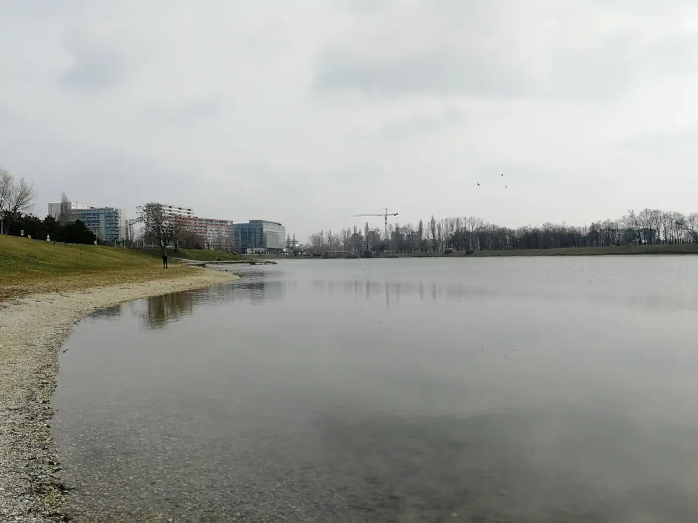
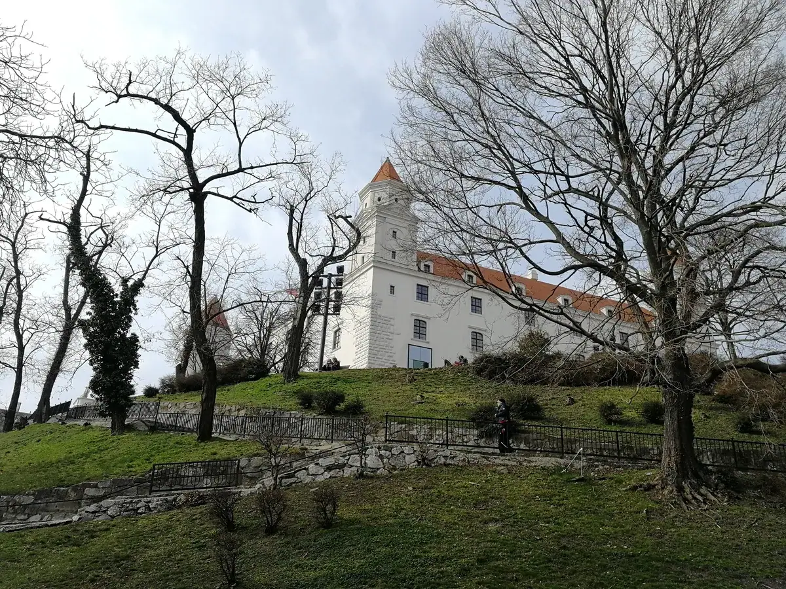
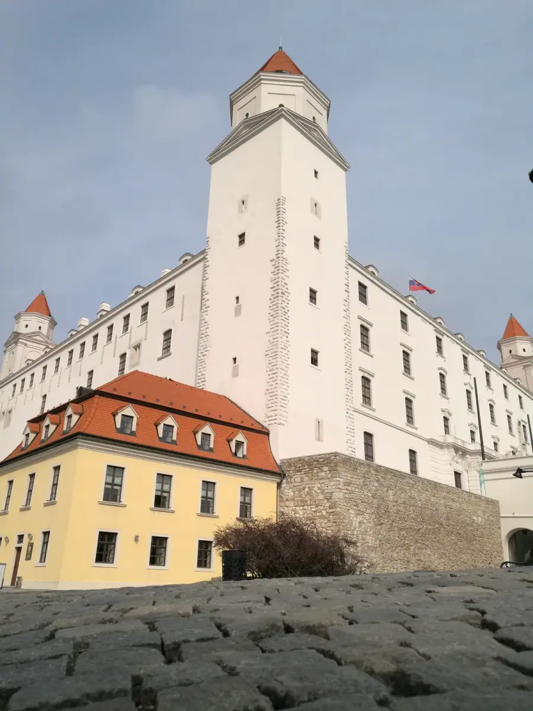
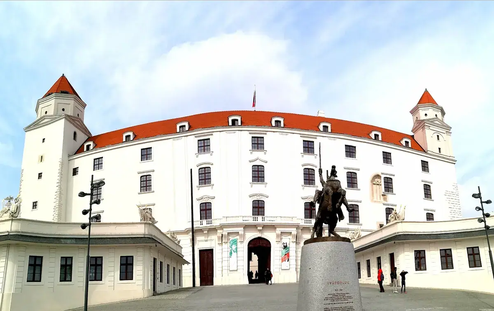
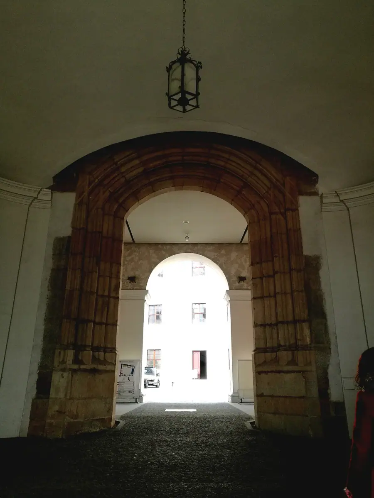

布拉迪斯拉发：多瑙河走廊上的一座小而倔强的首都
Bratislava — a small, stubborn capital on the Danube corridor.

（2017 年 · 斯洛伐克 · 布拉迪斯拉发）
说明：本文涉及历史上几次经过多瑙河走廊的入侵（匈奴、蒙古），按「没有好坏、客观写」的原则处理，只呈现史实和不同的历史评价视角，不做道德判断。关于城堡里那枚家徽具体属于哪个家族，查证后没能锁定，因此文中说的是「这类图案」「很可能」，而不是确凿考证。
中心广场：走在中世纪的石板路上，却有种社会主义的错觉
布拉迪斯拉发的中心广场（主广场）本身是标准的中欧老城配置——巴洛克和文艺复兴风格的联排建筑围出一个方形广场，底层是咖啡馆和商铺。但你说这里「有种前苏联的感觉」，这个判断不是错觉：布拉迪斯拉发老城隔着多瑙河的对岸，矗立着彼德尔扎尔卡（Petržalka）——中欧规模最大的社会主义时期板式住宅区之一，几十栋一模一样的预制板高层楼房密密麻麻铺满整片河岸，站在老城任何一个稍高的角度，几乎都躲不开这片景观。斯洛伐克在 1993 年从捷克斯洛伐克分离独立之前，长期处在华约阵营的计划经济体制下，这种「老城广场 + 对岸社会主义卫星城」的城市结构，在中东欧的前社会主义国家首都里相当典型——你在广场上感受到的那种混合的时代感，其实是两种完全不同的城市规划逻辑，隔着一条河互相对视了几十年。
你还提到城市「还在建设期，看到很多公司」，路边三五成群的工人在修路修设施——这也对得上斯洛伐克这些年的真实轨迹：2004 年加入欧盟和北约，2007 年加入申根区，2009 年加入欧元区，布拉迪斯拉发凭借紧邻维也纳（车程一小时左右）的区位优势，这些年一直在吸引跨国公司把金融、IT 和区域业务功能设在这里，城市基础设施也在持续追赶式地扩建改造。你 2017 年看到的那种「到处都在修」的状态，基本就是这段追赶期最直观的样子。


城堡：一张「倒扣的桌子」，还是一排「铅笔头」？
布拉迪斯拉发城堡建于 9 世纪至 18 世纪之间，整体是个方形主体，四角各有一座塔楼。当地人和游客最常见的比喻是说它像一张「倒扣过来的桌子」——四个塔楼就是四条支棱起来的桌腿。你叫它「铅笔头城堡」，大概是从另一个角度看这几座塔楼的锥形尖顶，确实也有点像四支竖起来的铅笔——两种比喻描述的是同一栋建筑，只是视角不同。
这座城堡的经历也不算太平：最早是古罗马时期的城墙据点，13 世纪重建，后来玛丽亚·特蕾西娅又为她最疼爱的女儿扩建过一部分；1811 年被一场大火烧毁，此后荒废了一个多世纪，直到 1953 到 1968 年间才重新修复，现在城堡的一半空间做了斯洛伐克国家博物馆。一座建筑横跨了从罗马帝国到冷战社会主义时期的重建，本身就是布拉迪斯拉发这座城市命运的缩影——反复被更大的势力（罗马、哈布斯堡、奥匈帝国、捷克斯洛伐克）接管、赋形，又反复在废墟上重新站起来。


家徽上的老鹰与人头：一段没有被磨圆的历史记忆
你在城堡里看到的那枚家徽——老鹰啄着一颗带有明显蒙古人相貌特征的人头——这类图案在中欧、尤其是历史上属于匈牙利王国版图的贵族纹章里并不罕见。中世纪欧洲纹章学里，用「猛禽叼着敌人首级」来表现家族武功的做法很常见，而这片区域最深刻的集体记忆之一，就是 1241 到 1242 年蒙古西征——拔都和速不台率领的蒙古大军在莫希战役中击溃匈牙利王国主力，一路横扫到多瑙河沿岸，包括当时属于匈牙利王国版图的斯洛伐克地区，直到窝阔台汗去世、蒙古大军东撤才结束这场浩劫。这段历史给当地贵族留下了极深的创伤记忆，后世不少家族在自己的纹章里加入「东方敌人首级」这类图案，用来纪念祖先在这场浩劫或者后续的奥斯曼战争中立下的战功——不过具体到你拍到的这一枚家徽属于哪个家族，我没能查证确认，只能说这类图案背后大概率对应的就是这段历史。
上帝之鞭与蒙古大道：多瑙河，一条被反复借道的河
家徽这条线索往前再推一步，就到了比蒙古人还要早 800 年的匈人——阿提拉。5 世纪时，阿提拉统治的匈人帝国就以喀尔巴阡盆地和多瑙河沿岸为核心，他本人被基督教世界称为「上帝之鞭」（Scourge of God），意思是上天派来惩罚人间的灾祸，他的军队一路打到过高卢和意大利，给当时的欧洲带来了极大的恐慌和破坏。800 年后，蒙古人几乎沿着同一条路径——从欧亚草原东端一路向西，借道多瑙河流域进入中欧腹地，再一次把这片土地卷入战火。
如果把时间线拉得更长看，多瑙河这条河谷走廊，历史上先后被匈人、阿瓦尔人、马扎尔人（匈牙利人的祖先）、蒙古人、奥斯曼土耳其人反复用作从东方进入欧洲腹地的通道。每一次「借道」，带来的都是战争、屠杀和破坏，但客观上也伴随着人口迁徙、技术和物种的传播、政治版图的重新洗牌——马扎尔人正是沿着这条路定居下来，才有了后来的匈牙利王国。
写在最后
站在布拉迪斯拉发城堡往下看多瑙河的时候，很难不去想：眼前这条河，一千多年里先后送来过匈人、蒙古人、奥斯曼人，也送来过后来的哈布斯堡王朝、奥匈帝国、捷克斯洛伐克、今天的欧盟。这座城市的城堡换了无数次主人，广场对岸也从贵族庄园变成了社会主义板楼，现在又开始盖起跨国公司的办公楼——某种意义上，布拉迪斯拉发从来没有真正「独立」决定过自己的命运，它一直是被更大的历史潮流反复冲刷、反复重塑的一块河谷平地。而这大概也是多瑙河沿岸这些中欧小国共同的宿命：地理位置注定了它们永远处在几种力量的十字路口上。
一个国家的地理位置，曾经决定它会被谁入侵，今天决定它会被谁投资——位置从未改变，改变的只是叩门的方式。
——董立鑫 海鑫汇创始人兼执行总裁，新加坡世贸秘书长兼首席运营官
本文整理自董立鑫（Bruce Dong）海外产业考察记录，首发于海鑫汇。